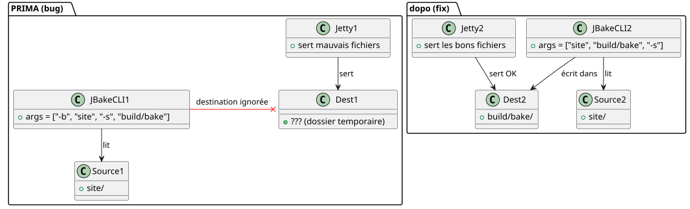

Perché `serve` mostrava un sito brutto mentre `publishSite` era perfetto
Publié le 22 April 2026
Conosci quel momento in cui il tuo sito in locale sembra un disastro, ma una volta distribuito online tutto è perfetto? È quello che mi è capitato con il mio plugin Gradle JBake. L’operazione`serve`mostrava pulsanti quadrati, testo scuro su sfondo nero, e un CSS stranamente assente. Tuttavia`publishSite`generava lo stesso sito, lui, impeccabile. Il colpevole non era né il CSS, né il navigatore, né la cache. Era una riga di codice Kotlin — e una cattiva abitudine con gli argomenti della riga di comando.
- toc
-
[]
La scena: quattro screenshot, due rendering
Era dopo un crash del sistema. Avevo fatto quattro screenshot per confrontare il rendering locale (./gradlew serve`su`localhost:8820) con il rendering online (`publishSite`su GitHub Pages). Due screenshot per pagina: la parte superiore e la parte inferiore.
Rendu local
Inizio pagina— I pulsanti Project e Template sonopiccoli, rettangolari, ai colori standard (blu e verde). La carta Start Writing ha unsfondo nero uniforme, senza cornice.

Piede di pagina— Il sottotitolo "Ultimi articoli e risorse" èquasi illeggibile, troppo scuro su sfondo nero. Le date sotto le immagini del blog ("17 October 2013", ecc.) sonoassenti.

Resa online
In alto della pagina— I stessi pulsanti sonograndi, ovaux, verde neon appariscente, testo in maiuscolo. La carta ha uncornice bianca arrotondata con ombra portata.

Piede di pagina— Il sottotitolo èben leggibile. Le date sonovisibili. Le carte degli articoli hannoangoli arrotondatie i titoli sonoin grassetto.

Primo riflesso: il tema. Utilizzo un sistema di tema dinamico (chiaro, scuro, high-contrast) basato su`localStorage`. Forse il local store attivava un tema high-contrast? No. Avevo già scrittohttps://cheroliv.com/blog/2025/0098_preloading_css_variable_post.html[un articolo intero sul pre-caricamento dei temi], so come funziona. E poi, anche in modalità high-contrast, la struttura CSS (pulsanti ovali, ombre) doveva essere lì. Non lo era.
Seconda riflessione: la cache del browser. No, avevo fatto il test con profili puliti. Il diff persisteva.
Terzo riflesso :`serve`non serviva gli stessi file che`publishSite`.
La diagnosi : serve non puntava verso la cartella corretta
Il mio plugin Gradle`bakery`ha due compiti principali :
-
bake: genera il sito statico in`build/bake/` -
serve: avvia un server web locale -
publishSite: germoglio`build/bake/`verso GitHub Pages
La divergenza non poteva venire che da`serve`. Si publishSite`pubblicava il contenuto corretto, è che`build/bake/`era buono. se`serve`mostrava altro, è che non serviva`build/bake/.
Guardiamo il codice. Dentro`SiteManager.kt`, il compito`serve`è definita così :
tasks.register("serve", JavaExec::class.java) { task ->
task.apply {
mainClass.set("org.jbake.launcher.Main")
classpath = jbakeRuntime
environment("GEM_PATH", jbakeRuntime.asPath)
jvmArgs(/* ... */)
args = listOf(
"-b", file(site.bake.srcPath).absolutePath,
"-s", layout.buildDirectory.get()
.asFile.resolve(site.bake.destDirPath)
.absolutePath
)
}
}org.jbake.launcher.Main`è il punto di ingresso della CLI JBake 2.7.0. L’idea: passare-b`per la cartella di origine e </think> per la cartella di origine e`-s`per la cartella di destinazione, poi avviare il modo server. Tuttavia…
La causa radice: JBake CLI non funziona così
JBake 2.7.0 attende deiargomenti posizionaliper source e destination, poi dei flag opzionali. La firma è :
jbake <source> <destination> [options]Ora nel mio codice, scrivevo:
args = listOf("-b", "/path/to/site", "-s", "/path/to/build/bake")JBake lo interpretava così:
-
-b→ analizza il flag "bake" (booleano), consumato -
/path/to/site→ diventa l’argomento posizionale 1 (fonte) -
-s→ parse il flag "serve" (booleano), server lanciatoimmediatamente -
/path/to/build/bake→ diventa un argomento orfano, ignorato o mal interpretato
Risultato: JBake prendeva`/path/to/site`come fonte,non teneva conto della destinazionefornita (build/bake), e utilizzava la sua directory predefinita (spesso`./output`o una copia temporanea). Il file`css/styles.css`il build era quindi sovrascritto o ignorato, ed era un vecchio CSS predefinito (senza le variabili personalizzate, senza gli angoli arrotondati, senza le ombre) che veniva servito.
In confronto,bake et publishSite`usano ilplugin ufficiale Gradle JBake(`jbake-gradle-plugin) che scrive correttamente in`build/bake/`via API Gradle. Non passano via CLI.
La soluzione: argomenti posizionali, non dei flag
La correzione è banale — una volta che lo sai. Basta passare la sorgente e la destinazione come argomenti posizionali, poi`-s`infine :
args = listOf(
file(site.bake.srcPath).absolutePath,
layout.buildDirectory.get()
.asFile.resolve(site.bake.destDirPath)
.absolutePath,
"-s"
)È tutto. Tre linee modificate, bug risolto.
Après publication locale du plugin (publishToMavenLocal), un `./gradlew serve`lancia JBake con la sintassi corretta :
jbake /home/user/project/site /home/user/project/build/bake -sE questa volta, il server Jetty integrato in JBake fornisce bene il contenuto di`build/bake/` — identique à ce qui est publié en ligne.

Verifica rapida con curl
Per assicurarsi che il server serva il contenuto corretto, un semplice`curl`conferma che`index.html`contiene`data-bs-theme="light"`e che`build/bake/css/styles.css`pesa effettivamente 31 402 byte — identico al file generato da`bake`.
$ ./gradlew serve
# Dans un autre terminal :
$ curl -s http://localhost:8820/ | grep data-bs-theme
<html ... data-bs-theme="light" ...>
$ curl -I http://localhost:8820/css/styles.css
HTTP/1.1 200 OK
Content-Length: 31402
Content-Type: text/cssIl rendering locale è orapixel-identicoal render distribuito
Perché questo bug era subdolo
Lei vede perché era difficile da prendere?
-
Nessun errore esplicitoJBake non si bloccava. Il "fonctionnait", semplicemente con una cartella sbagliata.
-
Il build funzionava:`./gradlew bake`generava correttamente i file in`build/bake/`.
-
La distribuzione funzionava:`publishSite`stava promuovendo il buon contenuto online
-
Solo
serveera rotto: il compito di sviluppo, quello che si utilizza costantemente per iterare. -
L’abitudine del
-key value: in quanto sviluppatore, si è condizionati dagli anni di CLI Unix (-o output`, `-i input`JBake CLI è un’eccezione — sorgente e destinazione sono posizionali.
Conclusione
Se mantieni un plugin Gradle che avvolge JBake (o qualsiasi strumento CLI)leggete la documentazione degli argomentianche se pensi di conoscerli. Un’ipotesi implicita (`-s`set destination") può costarti ore di debug visivo.
Qui, il fix era letteralmente di cambiare :
args = listOf("-b", src, "-s", dest) // ❌ BUGen :
args = listOf(src, dest, "-s") // ✅ FIXTre token spostati, e il mio sito locale torna bello come il sito in produzione.
Lezione: Quando il rendering differisce tra locale e produzione senza motivo evidente, sospetta prima il pipeline — non il CSS, non il browser, e tanto meno il framework. Spesso è il passaggio appena prima del rendering che imbroglia.
Articoli correlati
14 May 2026